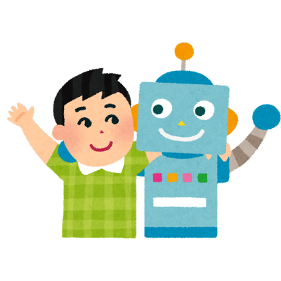
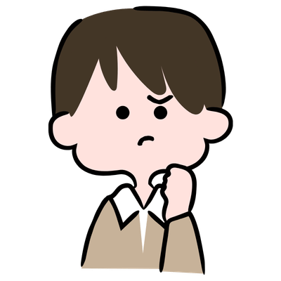

១
Segment 1
AI ស្ថិតជុំវិញកុមារ មុនពេលពួកគេយល់ដឹង
🗣️
🌐
📹
📱
🔤
🎵
សិស្សជួបប្រទះ AI (ដូចជា Siri លើទូរស័ព្ទឪពុកម្តាយ ឧបករណ៍បកប្រែ និងក្បួនណែនាំវីដេអូលើ យូធូប) យូរមុនពេលពួកគេយល់ដឹងពីដំណើរការរបស់វា
📘 UNESCO បង្កើតក្របខ័ណ្ឌអន្តរជាតិ សម្រាប់ សមត្ថភាព AI របស់សិស្ស
៣
Segment 3
ការយល់ច្រឡំធំៗ ៣ របស់កុមារ (Druga et al.)

Anthropomorphismគិតថា AI មានអារម្មណ៍ ភាពជាមិត្ត និងវិញ្ញាណដូចមនុស្ស
ការវាយតម្លៃខ្ពស់ហួសហេតុ
គិតថា AI "ឆ្លាតជាងគ្រូ" ហើយមិនដែលធ្វើខុស

ការច្រឡំរវាង AI និងភាវរស់ពិបាកបែងចែករវាងកម្មវិធីកុំព្យូទ័រ និងជីវិតពិត
💬 ការកែតម្រូវ សម្រាប់ការវាយតម្លៃខ្ពស់ហួសហេតុ៖ "AI អាចខុសបាន ដូចមនុស្សដែរ ព្រោះវារៀនចេះពីអ្វីដែលមនុស្សសរសេរទុក ហើយមនុស្សខ្លះក៏សរសេរខុសដែរ។ នេះហើយជាមូលហេតុដែលយើងត្រូវពិនិត្យឡើងវិញជានិច្ច។"
⚠️ ការយល់ច្រឡំទាំងនេះមិនតូចតាចទេ កំណត់ថាកុមារ ជឿចម្លើយ AI ដោយមិនពិចារណា កម្រិតណា
៤
Segment 4
ចម្លើយគំរូ៖ "តើ AI មានជីវិតទេ?"
👧 សិស្ស៖ "តើ AI មានជីវិត វិញ្ញាណ ឬអារម្មណ៍ដែរឬទេ?"
👩🏫 គ្រូ៖ "ទេ AI មិនមានជីវិត និងអារម្មណ៍ដូចមនុស្ស ឬសត្វទេ។ វាគ្រាន់តែជាកម្មវិធីកុំព្យូទ័រឆ្លាតវៃដែលមនុស្សបង្កើត ដើម្បីជួយទស្សន៍ទាយពាក្យបន្ទាប់ដែលទំនងជាងគេ។ សំណួររបស់កូនល្អណាស់! ពួកយើងសាកល្បងស្វែងយល់បន្ថែមអំពីរបៀបដែលវាដំណើរការជាមួយគ្នា!"
ដើម្បីរីកចម្រើនក្នុងពិភពដែលមាន AI សិស្សត្រូវការ ជំនាញគិតត្រិះរិះ វិភាគ ភាពចង់ចេះចង់ដឹង និងជំនាញទំនាក់ទំនងជាមួយមនុស្សពិត ដែល AI មិនអាចជំនួសបាន
✦
Segment 2
ក្របខ័ណ្ឌ UNESCO សម្រាប់សិស្ស៖
គំនិតផ្តោតលើមនុស្ស
Human-Centred Mindset

ក្រមសីលធម៌នៃ AI
Ethics of AI
បច្ចេកទេស និងការអនុវត្ត
AI Techniques & Applications
ការរចនាប្រព័ន្ធ AI
AI System Design